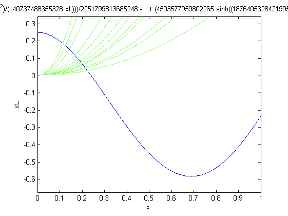

Contents
Defining boundary conditions
syms x L lambda A B C D;
syms rho Abar M;
X=A*cos((lambda/L)*x)+B*sin((lambda/L)*x)+C*cosh((lambda/L)*x)+D*sinh((lambda/L)*x);
syms xder
xder(1,:)=X;
xder(2,:)=simplify(diff(X,x,1));
xder(3,:)=simplify(rho*Abar*diff(X,x,3)-M*lambda^4*X);
xder(4,:)=simplify(diff(X,x,2));
x=0;
xd=eval(xder);
xder(1:2,:)=xd(1:2);
x=L;
xd=eval(xder);
xder(3:4,:)=xd(3:4);
Describing problem specific variables
L=1;
a=0.02;
b=0.01;
E=210e9;
rho=7800;
Abar=a*b;
M=2*Abar*L*rho;
Finding Natural Frequencies
xderval=eval(xder);
[mtr,b] = equationsToMatrix(xderval,[A B C D]);
U=[A; B ;C ;D];
detx=det(mtr);
shapefrequencies=[3.86148294520820 7.03164303944519 10.1850206054873 13.332661754517936 16.4779571402310;]
shapefrequencies =
Columns 1 through 3
3.861482945208200 7.031643039445190 10.185020605487299
Columns 4 through 5
13.332661754517936 16.477957140230998
Finding Mode Shapes
emtr=eval(mtr);
newB=eval(b-emtr(:,1));
sol=inv(mtr(2:4,2:4))*newB(2:4);
lambda=shapefrequencies(1);
sol(:,1)=eval(sol);
consts=[1;eval(sol)];
consts=consts/norm(consts);
syms A;
B=A*consts(2);
C=A*consts(3);
D=A*consts(4);
Plotting the results
for i=1:5
syms x;
Xeval=eval(X);
lambda=shapefrequencies(i);
A=consts(1);
syms xL;L=xL/x;
Xeval=eval(Xeval);
ezplot(Xeval,[0 1]);
hold on;
end
